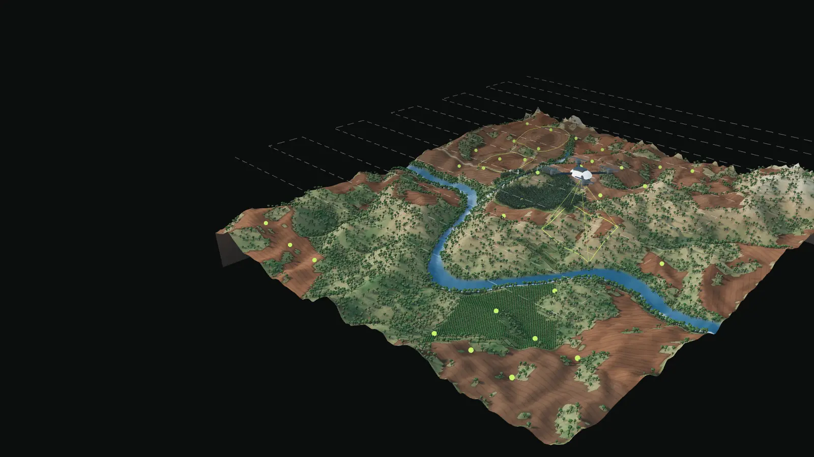
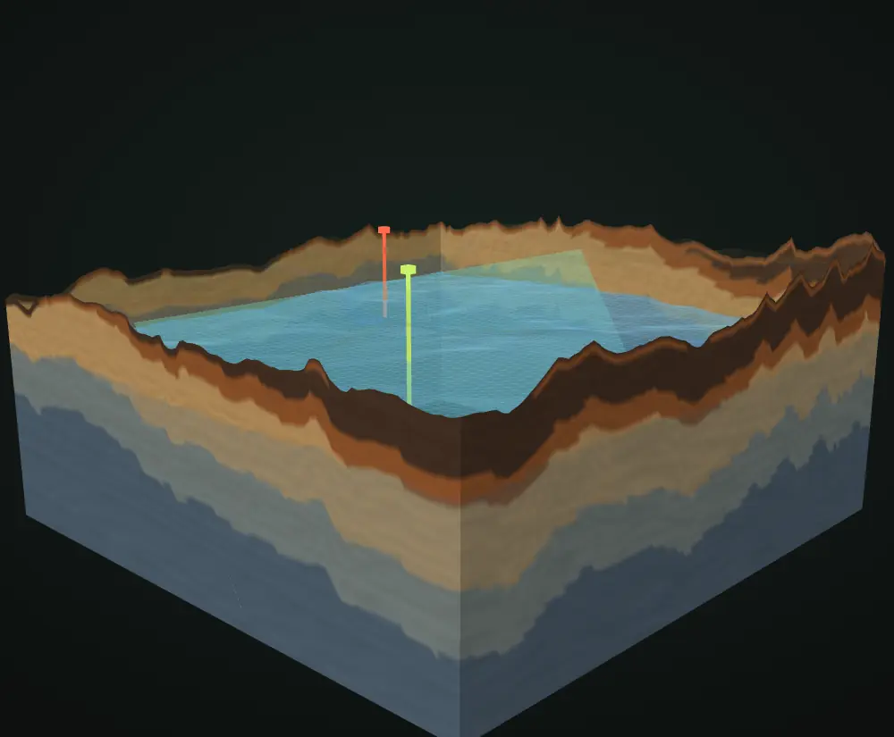
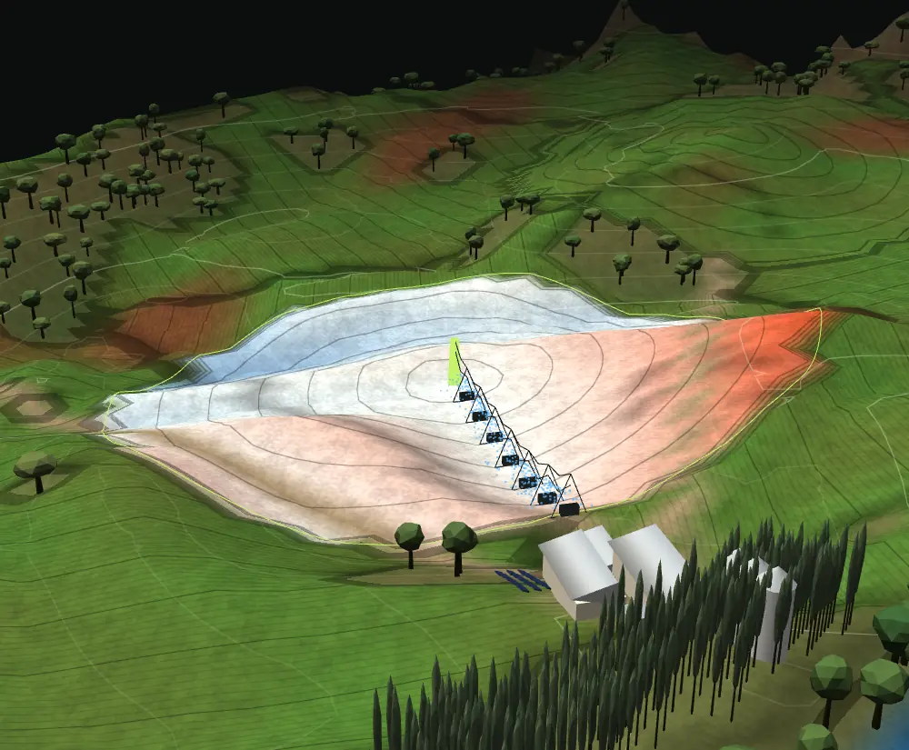
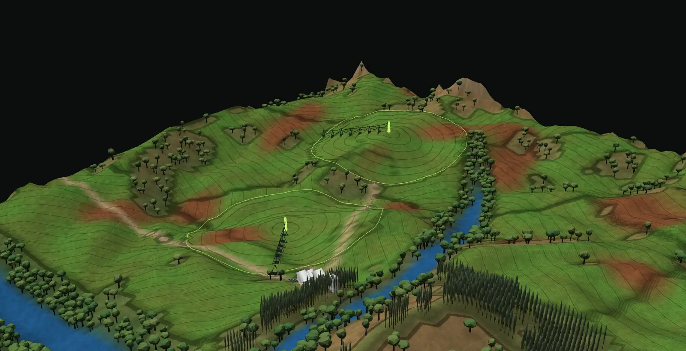
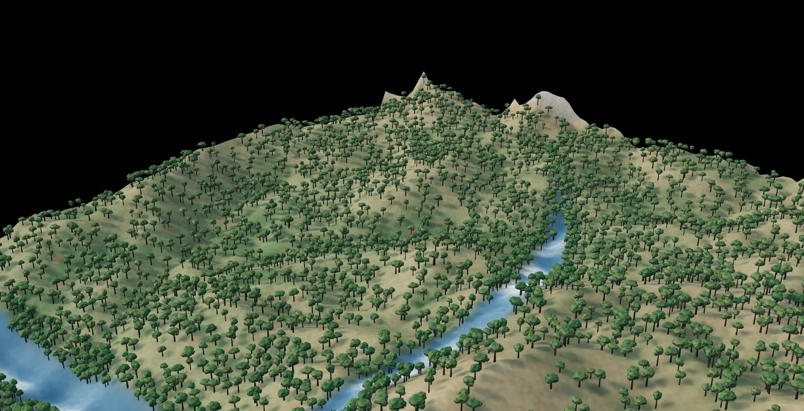

3.2 Borehole targets
| Target | Structure | Drill to | Confidence |
|---|---|---|---|
| BH-A | Dipping fracture zone | 46 m | High |
| BH-C | Shear zone, NE trend | 52 m | Medium |
| BH-D | Deep saprolite | 38 m | Medium |

Agricultural spatial intelligence · Zambia
Working demos of what we do, on one simulated farm. Press play, change the layers, and try the tools below.
Simulated 576 ha site · drag to rotate
01 · Groundwater
On Zambia’s crystalline basement, groundwater rarely sits in a flat layer. It collects in the weathered saprolite and moves through fractures and shear zones in the rock below. A borehole that intersects a water-bearing fracture can yield many times more than one drilled a few metres away.
We combine terrain analysis, lineament mapping and ground geophysics to model the weathering profile, the seasonal water table and the structures that carry water, then site boreholes on that evidence.

02 · Crop fit
Every candidate crop is scored against what the survey measured: soil type and texture, pH, drainage, rainfall and its reliability, slope, frost exposure and the water that can be pumped sustainably. The owner’s horizon matters too: an annual crop pays this season, a macadamia orchard in year five, a plantation in year ten.
Move the site conditions and watch the ranking change. In a real engagement the inputs come from laboratory results, the groundwater model and decades of climate records for the exact location.
Illustrative scoring model · 20 ha block
03 · Engineering
A centre pivot crossing a swale gains pressure and over-waters the low ground. Coming over a crest it loses head and starves the crop. Mainlines laid against the contour erode. We design inside the twin so these problems are solved on screen, not discovered in the field.
Our forward-deployed agricultural engineers stay with the project from survey to commissioning, so the design that was modelled is the system that gets built.

04 · Watch
Satellite revisits every few days track crop vigour, soil moisture and change across the whole property. Aerial flights and ground teams resolve what orbit can only flag. Everything lands on one platform, tied to the twin.

Point at an alert to find it on the map
Lowland block 7 · 62 mm forecast in 48 h; drain D2 near capacity.
North-east ridge · grass fully cured, NE wind 24 km/h. Open firebreak 3.
Pivot 2 · canopy pattern consistent with fall armyworm. Scout within 24 h.
Orchard A rows 14–19 · red-edge index down 11% in 9 days.
Ridge fields · gusts to 70 km/h forecast; lodging risk on tall maize.
East boundary · 1.8 ha of new clearing detected.
Prescription maps send inputs only where they are needed: variable-rate fertiliser and lime, and spot spraying of flagged zones instead of whole fields Spraying launching soon
Season-long models of crop development, water demand and harvest timing, updated with every new observation.
For commercial estates, a physical inspection every two to three weeks, reported against the twin.
Open the Watch platform demoMap, alerts, field trends and reports, as a client sees them. Simulated data.
05 · Outcome
Owners, boards and lenders see the end state of the investment, and the evidence behind it, before ground is broken.


Rendered from the site’s digital twin
06 · What you receive
Every engagement ends in things your agronomist, contractor, board and bank can use: a written report, the 3D model online, and files that drop straight into design software and farm machinery.
Your goals, the land, access, and what decisions the work needs to support.
Aerial mapping, geo-referenced soil sampling and groundwater fieldwork on site.
Terrain, drainage and subsurface modelled; crops ranked for each block.
Fields, water and irrigation designed in the twin; contractor-ready drawings.
Monitoring, alerts and field visits through the season.
Timing depends on size, access and season; your proposal states it.
How pricing works. Mapping and crop intelligence are priced per hectare, groundwater per site, design per project, and Watch monthly or yearly. A written quote follows the first call.
Site baseline & development plan
Sample · simulated data